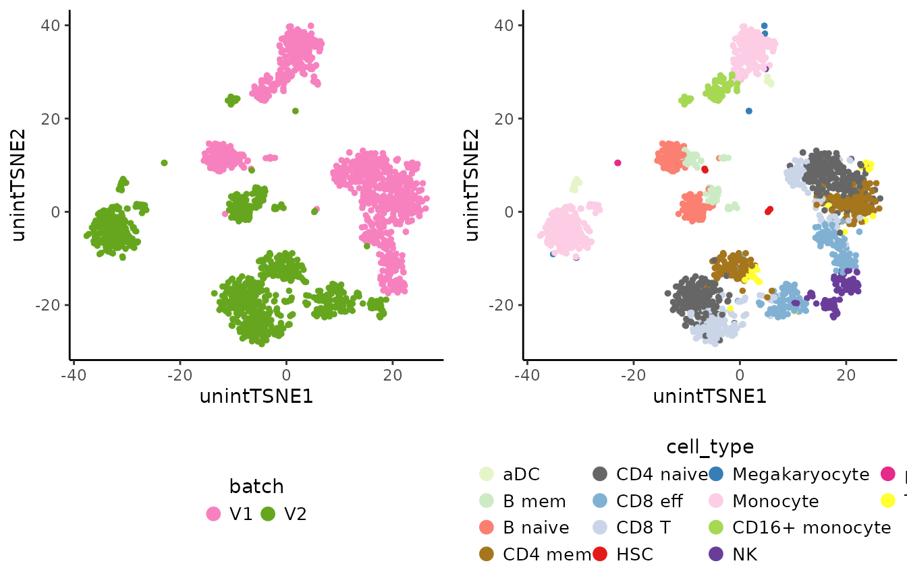
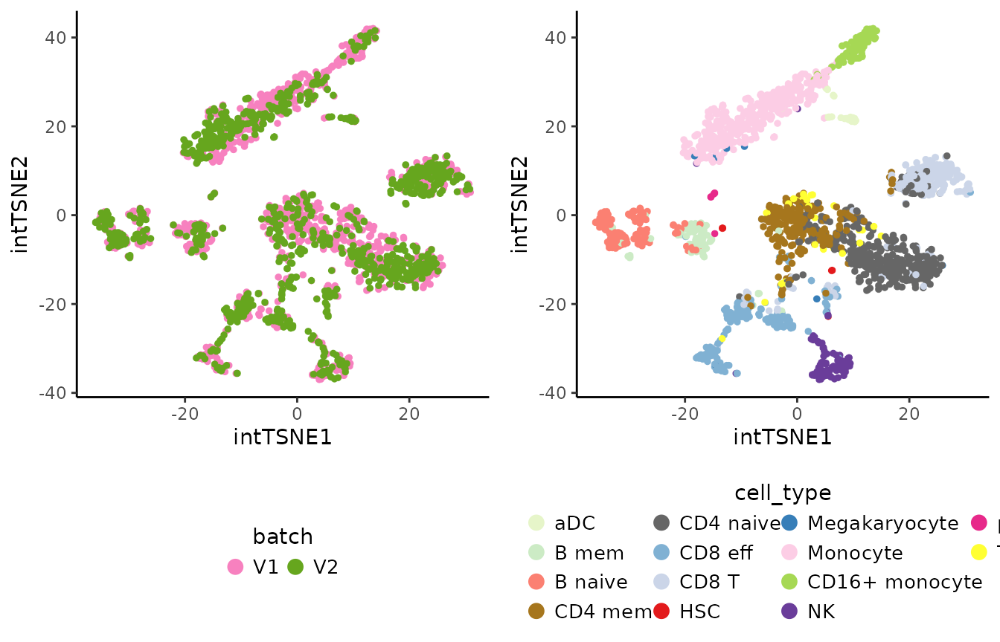
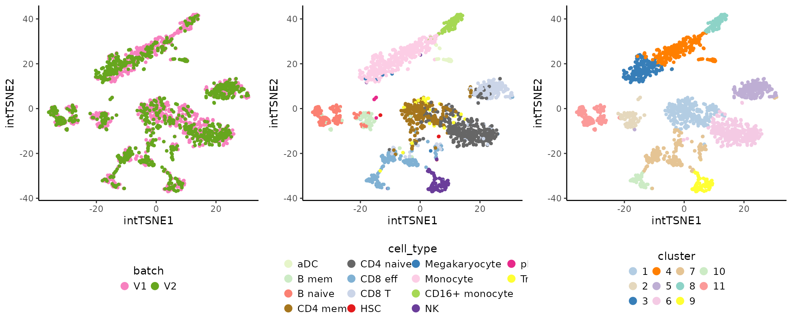
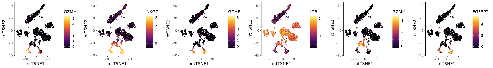

Integration
# Packages
library("SingleCellExperiment")
library("Coralysis")
library("scater")
library("ggplot2")
#library("scran")
#library("cowplot")
# Import data distributed with Coralysis
data("pbmc_10Xassays") # it imports object as sce
pbmc_10Xassays## class: SingleCellExperiment
## dim: 2000 2000
## metadata(0):
## assays(2): counts logcounts
## rownames(2000): LYZ S100A9 ... IGSF8 KIR2DL1
## rowData names(8): highly_variable mean ... FDR per.block
## colnames(2000): ACATACCTGTCAAC ATTGAAACTCGTAG ... AGAGTGGCAGGGTTAG
## GACTGCGAGCGTTCCG
## colData names(3): barcode batch cell_type
## reducedDimNames(0):
## mainExpName: NULL
## altExpNames(0):Check how the data looks before integrating.
# Compute PCA & TSNE
set.seed(123)
pbmc_10Xassays <- RunPCA(object = pbmc_10Xassays, assay.name = "logcounts", p = 30, dimred.name = "unintPCA")
set.seed(123)
pbmc_10Xassays <- RunTSNE(pbmc_10Xassays, dimred.type = "unintPCA", dimred.name = "unintTSNE")
# Plot TSNE highlighting the batch & cell type
unint.batch.plot <- PlotDimRed(object = pbmc_10Xassays, color.by = "batch",
dimred = "unintTSNE", point.size = 0.01,
legend.nrow = 1, seed.color = 1024)
unint.cell.plot <- PlotDimRed(object = pbmc_10Xassays, color.by = "cell_type",
dimred = "unintTSNE", point.size = 0.01,
legend.nrow = 4, seed.color = 7)
cowplot::plot_grid(unint.batch.plot, unint.cell.plot, ncol = 2, align = "vh")
Run integration with Coralysis. Provide the batch label
column name in colData(pbmc_10Xassays) to the parameter
batch.label.
# Perform integration with Coralysis
set.seed(1024)
pbmc_10Xassays <- RunParallelDivisiveICP(object = pbmc_10Xassays, batch.label = "batch", threads = 4)##
## Building training set...## Training set successfully built.##
## Computing cluster seed.## Warning: useNames = NA is deprecated. Instead, specify either useNames = TRUE
## or useNames = FALSE.##
## Initializing divisive ICP clustering...##
|
| | 0%
|
|= | 2%
|
|=== | 4%
|
|==== | 6%
|
|====== | 8%
|
|======= | 10%
|
|========= | 12%
|
|========== | 14%
|
|=========== | 16%
|
|============= | 18%
|
|============== | 20%
|
|================ | 22%
|
|================= | 24%
|
|=================== | 27%
|
|==================== | 29%
|
|===================== | 31%
|
|======================= | 33%
|
|======================== | 35%
|
|========================== | 37%
|
|=========================== | 39%
|
|============================= | 41%
|
|============================== | 43%
|
|=============================== | 45%
|
|================================= | 47%
|
|================================== | 49%
|
|==================================== | 51%
|
|===================================== | 53%
|
|======================================= | 55%
|
|======================================== | 57%
|
|========================================= | 59%
|
|=========================================== | 61%
|
|============================================ | 63%
|
|============================================== | 65%
|
|=============================================== | 67%
|
|================================================= | 69%
|
|================================================== | 71%
|
|=================================================== | 73%
|
|===================================================== | 76%
|
|====================================================== | 78%
|
|======================================================== | 80%
|
|========================================================= | 82%
|
|=========================================================== | 84%
|
|============================================================ | 86%
|
|============================================================= | 88%
|
|=============================================================== | 90%
|
|================================================================ | 92%
|
|================================================================== | 94%
|
|=================================================================== | 96%
|
|===================================================================== | 98%
|
|======================================================================| 100%##
## Divisive ICP clustering completed successfully.##
## Predicting cell cluster probabilities using ICP models...## 'as(<matrix>, "dgRMatrix")' is deprecated.
## Use 'as(as(as(., "dMatrix"), "generalMatrix"), "RsparseMatrix")' instead.
## See help("Deprecated") and help("Matrix-deprecated").## Prediction of cell cluster probabilities completed successfully.##
## Multi-level integration completed successfully.
# Compute PCA with joint cluster probabilities & TSNE
set.seed(123)
pbmc_10Xassays <- RunPCA(pbmc_10Xassays, assay.name = "joint.probability", dimred.name = "intPCA")## Divisive ICP: selecting ICP tables multiple of 4
set.seed(123)
pbmc_10Xassays <- RunTSNE(pbmc_10Xassays, dimred.type = "intPCA", dimred.name = "intTSNE")
# Plot TSNE highlighting the batch & cell type
int.batch.plot <- PlotDimRed(object = pbmc_10Xassays, color.by = "batch",
dimred = "intTSNE", point.size = 0.01,
legend.nrow = 1, seed.color = 1024)
int.cell.plot <- PlotDimRed(object = pbmc_10Xassays, color.by = "cell_type",
dimred = "intTSNE", point.size = 0.01,
legend.nrow = 4, seed.color = 7)
cowplot::plot_grid(int.batch.plot, int.cell.plot, ncol = 2, align = "vh")
Graph-based clustering on the integrated PCA
# Graph-based clustering on the integrated PCA w/ 'scran' package
set.seed(123)
pbmc_10Xassays$cluster <- scran::clusterCells(pbmc_10Xassays, use.dimred = "intPCA",
BLUSPARAM = bluster::SNNGraphParam(k = 15, cluster.fun = "louvain"))
# Plot clustering
clt.plot <- PlotDimRed(object = pbmc_10Xassays, color.by = "cluster", dimred = "intTSNE",
point.size = 0.01, legend.nrow = 3, seed.color = 65)
cowplot::plot_grid(int.batch.plot, int.cell.plot, clt.plot, ncol = 3, align = "h")
Cluster markers
# Cluster markers
cluster.markers <- FindAllClusterMarkers(object = pbmc_10Xassays, clustering.label = "cluster")## -----------------------------------
## testing cluster 1
## 1125 features left after min.pct filtering
## 1125 features left after min.diff.pct filtering
## 219 features left after log2fc.threshold filtering
## -----------------------------------
## -----------------------------------
## testing cluster 2
## 1213 features left after min.pct filtering
## 1213 features left after min.diff.pct filtering
## 283 features left after log2fc.threshold filtering
## -----------------------------------
## -----------------------------------
## testing cluster 3
## 1184 features left after min.pct filtering
## 1184 features left after min.diff.pct filtering
## 429 features left after log2fc.threshold filtering
## -----------------------------------
## -----------------------------------
## testing cluster 4
## 1186 features left after min.pct filtering
## 1186 features left after min.diff.pct filtering
## 448 features left after log2fc.threshold filtering
## -----------------------------------
## -----------------------------------
## testing cluster 5
## 1189 features left after min.pct filtering
## 1189 features left after min.diff.pct filtering
## 278 features left after log2fc.threshold filtering
## -----------------------------------
## -----------------------------------
## testing cluster 6
## 1125 features left after min.pct filtering
## 1125 features left after min.diff.pct filtering
## 286 features left after log2fc.threshold filtering
## -----------------------------------
## -----------------------------------
## testing cluster 7
## 1193 features left after min.pct filtering
## 1193 features left after min.diff.pct filtering
## 190 features left after log2fc.threshold filtering
## -----------------------------------
## -----------------------------------
## testing cluster 8
## 1140 features left after min.pct filtering
## 1140 features left after min.diff.pct filtering
## 392 features left after log2fc.threshold filtering
## -----------------------------------
## -----------------------------------
## testing cluster 9
## 1219 features left after min.pct filtering
## 1219 features left after min.diff.pct filtering
## 364 features left after log2fc.threshold filtering
## -----------------------------------
## -----------------------------------
## testing cluster 10
## 1141 features left after min.pct filtering
## 1141 features left after min.diff.pct filtering
## 280 features left after log2fc.threshold filtering
## -----------------------------------
## -----------------------------------
## testing cluster 11
## 1210 features left after min.pct filtering
## 1210 features left after min.diff.pct filtering
## 346 features left after log2fc.threshold filtering
## -----------------------------------
# Select the top 3 positive markers per cluster
top3.markers <- lapply(X = split(x = cluster.markers, f = cluster.markers$cluster), FUN = function(x) {
head(x[order(x$log2FC, decreasing = TRUE),], n = 3)
})
top3.markers <- do.call(rbind, top3.markers)
top3.markers <- top3.markers[order(as.numeric(top3.markers$cluster)),]
# Heatmap of the top 3 positive markers per cluster
HeatmapFeatures(object = pbmc_10Xassays, clustering.label = "cluster",
features = top3.markers$marker)
DGE
Coralysis was able to separate the CD8 effector T cells
into two clusters: 7 and 10. From the differential expression analysis
below, it is clear that cluster 10 is more cytotoxic and similar to NK
cells than cluster 7.
# DGE analysis: cluster 7 vs 10
dge.clt7vs10 <- FindClusterMarkers(pbmc_10Xassays, clustering.label = "cluster",
clusters.1 = "7", clusters.2 = "10")## testing cluster group.1
## 1113 features left after min.pct filtering
## 1113 features left after min.diff.pct filtering
## 191 features left after log2fc.threshold filtering## p.value adj.p.value log2FC pct.1 pct.2 diff.pct
## GZMH 8.414945e-48 1.682989e-44 -2.905334 0.15246637 1.0000000 0.8475336
## NKG7 1.252970e-28 2.505941e-25 -1.988487 0.78475336 1.0000000 0.2152466
## GZMB 5.329866e-38 1.065973e-34 -1.976993 0.06278027 0.7777778 0.7149975
## LTB 1.889206e-21 3.778412e-18 1.848061 0.85650224 0.2222222 0.6342800
## GZMK 1.956057e-22 3.912113e-19 1.817744 0.79820628 0.1111111 0.6870952
## FGFBP2 9.881937e-30 1.976387e-26 -1.711501 0.11659193 0.7500000 0.6334081
## marker
## GZMH GZMH
## NKG7 NKG7
## GZMB GZMB
## LTB LTB
## GZMK GZMK
## FGFBP2 FGFBP2
top6.degs <- head(dge.clt7vs10[order(abs(dge.clt7vs10$log2FC), decreasing = TRUE),"marker"])
exp.plots <- lapply(X = top6.degs, FUN = function(x) {
PlotExpression(object = pbmc_10Xassays, color.by = x, scale.values = TRUE, point.size = 0.5, point.stroke = 0.5)
})
cowplot::plot_grid(plotlist = exp.plots, align = "vh", ncol = 6)
Reference-mapping
Perform reference-mapping with Coralysis,
## Reference-mapping
# Split the SCE object by 'batch'
reducedDims(pbmc_10Xassays) <- list() # remove dimensional reductions
ref <- pbmc_10Xassays[,pbmc_10Xassays$batch=="V2"] # let V2 assay batch be the reference data set
query <- pbmc_10Xassays[,pbmc_10Xassays$batch=="V1"] # let V1 be the query (unknown annotations)
# 1) Train the reference
set.seed(123)
ref <- RunParallelDivisiveICP(object = ref, divisive.method = "cluster",
threads = 4) # runs without 'batch.label' as it represents 1 sample only##
## Building training set...## Training set successfully built.##
## Computing cluster seed.## Warning: useNames = NA is deprecated. Instead, specify either useNames = TRUE
## or useNames = FALSE.##
## Initializing divisive ICP clustering...##
|
| | 0%
|
|= | 2%
|
|=== | 4%
|
|==== | 6%
|
|====== | 8%
|
|======= | 10%
|
|========= | 12%
|
|========== | 14%
|
|=========== | 16%
|
|============= | 18%
|
|============== | 20%
|
|================ | 22%
|
|================= | 24%
|
|=================== | 27%
|
|==================== | 29%
|
|===================== | 31%
|
|======================= | 33%
|
|======================== | 35%
|
|========================== | 37%
|
|=========================== | 39%
|
|============================= | 41%
|
|============================== | 43%
|
|=============================== | 45%
|
|================================= | 47%
|
|================================== | 49%
|
|==================================== | 51%
|
|===================================== | 53%
|
|======================================= | 55%
|
|======================================== | 57%
|
|========================================= | 59%
|
|=========================================== | 61%
|
|============================================ | 63%
|
|============================================== | 65%
|
|=============================================== | 67%
|
|================================================= | 69%
|
|================================================== | 71%
|
|=================================================== | 73%
|
|===================================================== | 76%
|
|====================================================== | 78%
|
|======================================================== | 80%
|
|========================================================= | 82%
|
|=========================================================== | 84%
|
|============================================================ | 86%
|
|============================================================= | 88%
|
|=============================================================== | 90%
|
|================================================================ | 92%
|
|================================================================== | 94%
|
|=================================================================== | 96%
|
|===================================================================== | 98%
|
|======================================================================| 100%##
## Divisive ICP clustering completed successfully.##
## Predicting cell cluster probabilities using ICP models...## Prediction of cell cluster probabilities completed successfully.##
## Multi-level integration completed successfully.
# 2) Compute reference PCA & UMAP
ref <- RunPCA(ref, return.model = TRUE, pca.method = "stats")## Divisive ICP: selecting ICP tables multiple of 4
set.seed(123)
ref <- RunUMAP(ref, return.model = TRUE)
# 3) Project & predict query cell labels
set.seed(1024)
map <- ReferenceMapping(ref = ref, query = query, ref.label = "cell_type",
project.umap = TRUE, dimred.name.prefix = "ref")
# Calculate accuracy
preds_x_truth <- table(map$coral_labels, map$cell_type)
preds_x_truth##
## aDC B mem B naive CD4 mem CD4 naive CD8 eff CD8 T HSC
## aDC 14 0 0 0 0 0 0 0
## B mem 0 40 16 0 0 0 0 3
## B naive 0 4 69 0 0 0 0 0
## CD4 mem 0 0 0 94 26 2 1 0
## CD4 naive 0 0 0 28 165 0 15 2
## CD8 eff 0 1 0 0 0 95 1 0
## CD8 T 0 0 0 6 5 10 65 0
## HSC 0 0 0 0 0 0 0 0
## Megakaryocyte 0 0 0 0 0 0 0 0
## Monocyte 1 0 0 0 0 0 0 0
## CD16+ monocyte 0 0 0 0 0 0 0 0
## NK 0 0 0 0 0 1 0 0
## pDC 0 0 0 0 0 0 0 0
## Treg 0 0 0 0 0 0 0 0
##
## Megakaryocyte Monocyte CD16+ monocyte NK pDC Treg
## aDC 0 0 0 0 0 0
## B mem 0 0 0 0 0 0
## B naive 0 0 0 0 0 0
## CD4 mem 0 0 0 0 0 4
## CD4 naive 0 0 0 0 0 11
## CD8 eff 1 0 0 1 0 0
## CD8 T 1 0 0 0 0 0
## HSC 0 0 0 0 0 0
## Megakaryocyte 0 0 0 0 0 0
## Monocyte 3 176 8 1 0 0
## CD16+ monocyte 1 2 68 0 0 0
## NK 0 0 0 55 0 0
## pDC 0 0 0 0 4 0
## Treg 0 0 0 0 0 0## [1] 0.845
# Plot query and reference UMAP side-by-side with ground-truth & predicted cell labels
use.color <- c("aDC" = "#E6F5C9", "B mem" = "#CCEBC5", "B naive" = "#FB8072",
"CD4 mem" = "#A6761D", "CD4 naive" = "#666666", "CD8 eff" = "#80B1D3",
"CD8 T" = "#CBD5E8", "HSC" = "#E31A1C", "Megakaryocyte" = "#377EB8",
"Monocyte" = "#FCCDE5", "CD16+ monocyte" = "#A6D854", "NK" = "#6A3D9A",
"pDC" = "#E7298A", "Treg" = "#FFFF33")
ref.celltype.plot <- PlotDimRed(object = ref, color.by = "cell_type", dimred = "UMAP", point.size = 0.01,
legend.nrow = 6, seed.color = 7) + ggtitle("reference (ground-truth)")
query.ground_truth.plot <- PlotDimRed(object = map, color.by = "cell_type", dimred = "refUMAP", point.size = 0.01,
legend.nrow = 6, seed.color = 7) + ggtitle("query (ground-truth)")
query.predicted.plot <-PlotDimRed(object = map, color.by = "coral_labels", dimred = "refUMAP", point.size = 0.01,
legend.nrow = 6, use.color = use.color) + ggtitle("query (predicted)")
query.confidence.plot <- PlotExpression(object = map, color.by = "coral_probability", dimred = "refUMAP", point.size = 0.01,
color.scale = "viridis") + ggtitle("query (confidence)")
cowplot::plot_grid(ref.celltype.plot, query.ground_truth.plot, query.predicted.plot, query.confidence.plot,
ncol = 4, align = "vh")
# R session
sessionInfo()## R version 4.2.1 (2022-06-23)
## Platform: x86_64-pc-linux-gnu (64-bit)
## Running under: Ubuntu 20.04.5 LTS
##
## Matrix products: default
## BLAS: /usr/lib/x86_64-linux-gnu/openblas-pthread/libblas.so.3
## LAPACK: /usr/lib/x86_64-linux-gnu/openblas-pthread/liblapack.so.3
##
## locale:
## [1] LC_CTYPE=en_US.UTF-8 LC_NUMERIC=C
## [3] LC_TIME=en_US.UTF-8 LC_COLLATE=en_US.UTF-8
## [5] LC_MONETARY=en_US.UTF-8 LC_MESSAGES=en_US.UTF-8
## [7] LC_PAPER=en_US.UTF-8 LC_NAME=C
## [9] LC_ADDRESS=C LC_TELEPHONE=C
## [11] LC_MEASUREMENT=en_US.UTF-8 LC_IDENTIFICATION=C
##
## attached base packages:
## [1] stats4 stats graphics grDevices utils datasets methods
## [8] base
##
## other attached packages:
## [1] scater_1.26.1 ggplot2_3.5.1
## [3] scuttle_1.8.4 Coralysis_1.0.0
## [5] SingleCellExperiment_1.20.1 SummarizedExperiment_1.28.0
## [7] Biobase_2.58.0 GenomicRanges_1.50.2
## [9] GenomeInfoDb_1.34.9 IRanges_2.32.0
## [11] S4Vectors_0.36.2 BiocGenerics_0.44.0
## [13] MatrixGenerics_1.10.0 matrixStats_1.1.0
##
## loaded via a namespace (and not attached):
## [1] Rtsne_0.16 ggbeeswarm_0.7.1
## [3] colorspace_2.1-0 class_7.3-20
## [5] modeltools_0.2-23 rprojroot_2.0.3
## [7] bluster_1.8.0 XVector_0.38.0
## [9] BiocNeighbors_1.16.0 fs_1.6.1
## [11] rstudioapi_0.14 farver_2.1.1
## [13] ggrepel_0.9.3 RSpectra_0.16-1
## [15] fansi_1.0.4 codetools_0.2-18
## [17] sparseMatrixStats_1.10.0 cachem_1.0.7
## [19] knitr_1.42 jsonlite_1.8.4
## [21] Cairo_1.6-0 umap_0.2.10.0
## [23] cluster_2.1.3 png_0.1-8
## [25] pheatmap_1.0.12 compiler_4.2.1
## [27] dqrng_0.3.0 Matrix_1.6-5
## [29] fastmap_1.1.1 limma_3.54.2
## [31] aricode_1.0.2 cli_3.6.1
## [33] BiocSingular_1.14.0 htmltools_0.5.4
## [35] tools_4.2.1 rsvd_1.0.5
## [37] igraph_1.4.1 gtable_0.3.3
## [39] glue_1.6.2 GenomeInfoDbData_1.2.9
## [41] RANN_2.6.1 reshape2_1.4.4
## [43] LiblineaR_2.10-22 dplyr_1.1.1
## [45] doRNG_1.8.6 Rcpp_1.0.10
## [47] jquerylib_0.1.4 pkgdown_2.0.6
## [49] vctrs_0.6.1 iterators_1.0.14
## [51] DelayedMatrixStats_1.20.0 xfun_0.37
## [53] stringr_1.5.0 beachmat_2.14.0
## [55] lifecycle_1.0.3 irlba_2.3.5.1
## [57] rngtools_1.5.2 statmod_1.5.0
## [59] edgeR_3.40.2 zlibbioc_1.44.0
## [61] scales_1.3.0 ragg_1.2.4
## [63] doSNOW_1.0.20 parallel_4.2.1
## [65] SparseM_1.81 RColorBrewer_1.1-3
## [67] yaml_2.3.7 reticulate_1.34.0
## [69] memoise_2.0.1 gridExtra_2.3
## [71] ggrastr_1.0.1 sass_0.4.5
## [73] stringi_1.7.12 highr_0.10
## [75] desc_1.4.2 foreach_1.5.2
## [77] ScaledMatrix_1.6.0 scran_1.26.2
## [79] BiocParallel_1.32.6 rlang_1.1.0
## [81] pkgconfig_2.0.3 systemfonts_1.0.4
## [83] bitops_1.0-7 evaluate_0.20
## [85] lattice_0.20-45 purrr_1.0.1
## [87] labeling_0.4.2 cowplot_1.1.1
## [89] tidyselect_1.2.0 plyr_1.8.8
## [91] magrittr_2.0.3 R6_2.5.1
## [93] snow_0.4-4 generics_0.1.3
## [95] metapod_1.6.0 DelayedArray_0.24.0
## [97] pillar_1.9.0 withr_2.5.0
## [99] RCurl_1.98-1.10 tibble_3.2.1
## [101] utf8_1.2.3 rmarkdown_2.20
## [103] viridis_0.6.2 locfit_1.5-9.7
## [105] grid_4.2.1 flexclust_1.4-1
## [107] digest_0.6.31 textshaping_0.3.6
## [109] openssl_2.0.6 munsell_0.5.0
## [111] viridisLite_0.4.1 beeswarm_0.4.0
## [113] vipor_0.4.5 bslib_0.4.2
## [115] askpass_1.1